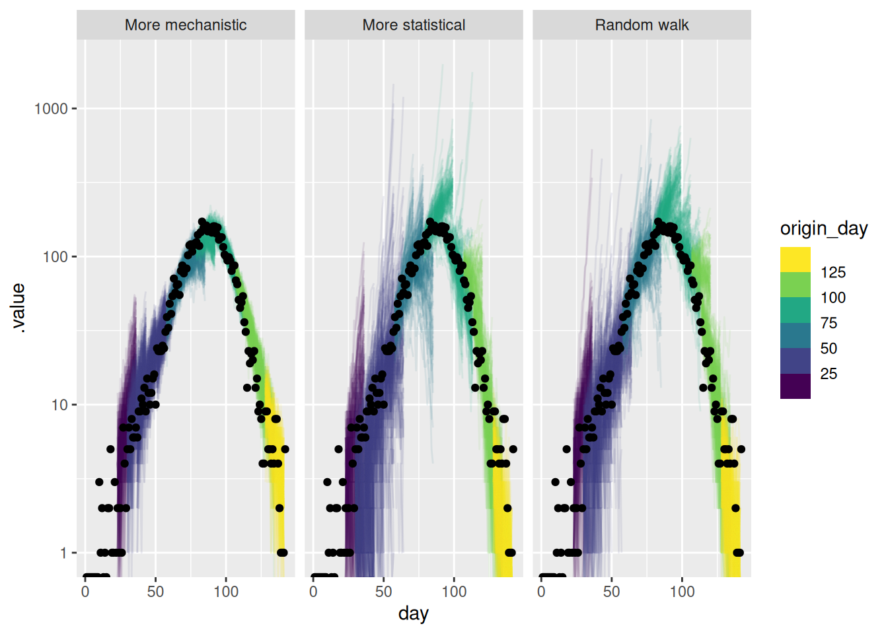

library("nfidd")
library("dplyr")
library("tidyr")
library("ggplot2")
library("scoringutils")Evaluating forecasts from multiple models
Introduction
We can classify models along a spectrum by how much they include an understanding of underlying processes, or mechanisms; or whether they emphasise drawing from the data using a statistical approach. These different approaches all have different strength and weaknesses, and it is not clear a prior which one produces the best forecast in any given situation.
In this session, we’ll start with forecasts from models of different levels of mechanism vs. statistical complexity and evaluate them using visualisation and proper scoring rules as we did in the last session for the random walk model
Slides
Objectives
The aim of this session is to introduce the concept of a spectrum of forecasting models and to demonstrate how to evaluate a range of different models from across this spectrum.
NoteSetup
Source file
The source file of this session is located at sessions/forecast-ensembles.qmd.
Libraries used
In this session we will use the nfidd package to load a data set of infection times and access stan models and helper functions, the dplyr and tidyr packages for data wrangling, ggplot2 library for plotting, the tidybayes package for extracting results of the inference and the scoringutils package for evaluating forecasts.
Tip
The best way to interact with the material is via the Visual Editor of RStudio.
Initialisation
We set a random seed for reproducibility. Setting this ensures that you should get exactly the same results on your computer as we do.
set.seed(123)Individual forecast models
In this session we will use the forecasts from different models. There all shared the same basic renewal with delays structure but used different models for the evolution of the effective reproduction number over time. These were:
- A random walk model (what we have looked at so far)
- A simple model of susceptible depletion referred to as “More mechanistic”
- A differenced autoregressive model referred to as “More statistical”
For the purposes of this session the precise details of the models are not critical to the concepts we are exploring.
NoteMore information on the mechanistic model (optional)
One way to potentially improve the renewal model is to add more mechanistic structure. In the forecasting visualisation session, we saw that the renewal model was making unbiased forecasts when the reproduction number was constant but that it overestimated the number of cases when the reproduction number was reducing due to susceptible depletion.
Warning
This is slightly cheating as we know the future of this outbreak and so can make a model to match. This is easy to do and important to watch for if wanting to make generalisable methods.
This suggests that we should add a term to the renewal model which captures the depletion of susceptibles. One way to do this is to add a term which is proportional to the number of susceptibles in the population. This is the idea behind the SIR model which is a simple compartmental model of infectious disease transmission. If we assume that susceptible depletion is the only mechanism which is causing the reproduction number to change, we can write the reproduction model as:
\[ R_t = \frac{S_{t-1}}{N} R_0 \]
Note
This approximates susceptible depletion as a linear function of the number of susceptibles in the population. This is a simplification but it is a good starting point.
NoteWhat behaviour would we expect from this model?
n <- 100
N <- 1000
R0 <- 1.5
S <- rep(NA, n)
S[1] <- N
Rt <- rep(NA, n) ## reproduction number
Rt[1] <- R0
I <- rep(NA, n)
I[1] <- 1
for (i in 2:n) {
Rt[i] <- (S[i-1]) / N * R0
I[i] <- I[i-1] * Rt[i]
S[i] <- S[i-1] - I[i]
}
data <- tibble(t = 1:n, Rt = Rt)
ggplot(data, aes(x = t, y = Rt)) +
geom_line() +
labs(title = "Simulated data from an SIR model",
x = "Time",
y = "Rt")The key assumptions we are making here are:
- The population is constant and we roughly know the size of the population.
- The reproduction number only changes due to susceptible depletion
- The number of new cases at each time is proportional to the number of susceptibles in the population.
NoteMore information on the statistical model (optional)
Adding more mechanistic structure is not always possible and, if we don’t specify mechanisms correctly, might make forecasts worse. Rather than adding more mechanistic structure to the renewal model, we could add more statistical structure with the aim of improving performance. Before we do this, we need to think about what we want from a forecasting model. As we identified above, we want a model which is unbiased and which has good short-term forecasting properties. We know that we want it to be able to adapt to trends in the reproduction number and that we want it to be able to capture the noise in the data. A statistical term that can be used to describe a time series with a trend is saying that the time series is non-stationary. More specifically, a stationary time series is defined as one whose statistical properties, such as mean and variance, do not change over time. In infectious disease epidemiology, this would only be expected for endemic diseases without external seasonal influence.
The random walk model we used in the forecasting visualisation session is a special case of a more general class of models called autoregressive (AR) models. AR models are a class of models which predict the next value in a time series as a linear combination of the previous values in the time series. The random walk model is specifically a special case of an AR(1) model where the next value in the time series is predicted as the previous value, multiplied by a value between 1 and -1 , plus some noise. This becomes a random walk when the multipled value is 0.
For the log-transformed reproduction number (\(log(R_t)\)), the model is:
\[ log(R_t) = \phi log(R_{t-1}) + \epsilon_t \]
where \(\epsilon_t\) is a normally distributed error term with mean 0 and standard deviation \(\sigma\) and \(\phi\) is a parameter between -1 and 1. If we restrict \(\phi\) to be between 0 and 1, we get a model which is biased towards a reproduction number of 1 but which can still capture trends in the data that decay over time.
NoteWhat behaviour would we expect from this model?
n <- 100
phi <- 0.4
sigma <- 0.1
log_R <- rep(NA, n)
log_R[1] <- rnorm(1, 0, sigma)
for (i in 2:n) {
log_R[i] <- phi * log_R[i-1] + rnorm(1, 0, sigma)
}
data <- tibble(t = 1:n, R = exp(log_R))
ggplot(data, aes(x = t, y = R)) +
geom_line() +
labs(title = "Simulated data from an exponentiated AR(1) model",
x = "Time",
y = "R")However, we probably don’t want a model which is biased towards a reproduction number of 1 (unless we have good reason to believe that is the expected behaviour). So what should we do?
Returning to the idea that the reproduction number is a non-stationary time series, as we expect to have a trend in the reproduction numbers we want to capture, we can use a method from the field of time series analysis called differencing to make the time series stationary. This involves taking the difference between consecutive values in the time series. For the log-transformed reproduction number, this would be:
\[ log(R_t) - log(R_{t-1}) = \phi (log(R_{t-1}) - log(R_{t-2})) + \epsilon_t \]
NoteWhat behaviour would we expect from this model?
Again we look at an R function that implements this model:
geometric_diff_arfunction (init, noise, std, damp)
{
n <- length(noise) + 1
x <- numeric(n)
x[1] <- log(init)
x[2] <- x[1] + noise[1] * std
for (i in 3:n) {
x[i] <- x[i - 1] + damp * (x[i - 1] - x[i - 2]) + noise[i -
1] * std
}
exp(x)
}
<bytecode: 0x564b76886240>
<environment: namespace:nfidd>We can use this function to simulate a differenced AR process:
log_R <- geometric_diff_ar(init = 1, noise = rnorm(100), std = 0.1, damp = 0.1)
data <- tibble(t = seq_along(log_R), R = exp(log_R))
ggplot(data, aes(x = t, y = R)) +
geom_line() +
labs(title = "Simulated data from an exponentiated AR(1) model with differencing",
x = "Time",
y = "R")As previously, we have fitted these models to a range of forecast dates so you don’t have to wait for the models to fit. We will now evaluate the forecasts from the mechanistic and statistical models.
data(rw_forecasts, stat_forecasts, mech_forecasts)
forecasts <- bind_rows(
rw_forecasts,
mutate(stat_forecasts, model = "More statistical"),
mutate(mech_forecasts, model = "More mechanistic")
) |>
ungroup()
forecasts# A tibble: 672,000 × 7
day .draw .variable .value horizon origin_day model
<dbl> <int> <chr> <dbl> <int> <dbl> <chr>
1 23 1 forecast 9 1 22 Random walk
2 23 2 forecast 5 1 22 Random walk
3 23 3 forecast 5 1 22 Random walk
4 23 4 forecast 3 1 22 Random walk
5 23 5 forecast 5 1 22 Random walk
6 23 6 forecast 6 1 22 Random walk
7 23 7 forecast 3 1 22 Random walk
8 23 8 forecast 2 1 22 Random walk
9 23 9 forecast 2 1 22 Random walk
10 23 10 forecast 4 1 22 Random walk
# ℹ 671,990 more rows
TipHow did we generate these forecasts?
Some important things to note about these forecasts:
- We used a 14 day forecast horizon.
- Each forecast used all the data up to the forecast date.
- We generated 1000 predictive posterior samples for each forecast.
- We started forecasting 3 weeks into the outbreak and then forecast every 7 days until the end of the data (excluding the last 14 days to allow a full forecast).
- We use the same simulated outbreak data as before:
gen_time_pmf <- make_gen_time_pmf()
ip_pmf <- make_ip_pmf()
onset_df <- simulate_onsets(
make_daily_infections(infection_times), gen_time_pmf, ip_pmf
)
head(onset_df)# A tibble: 6 × 3
day onsets infections
<dbl> <int> <int>
1 1 0 0
2 2 0 1
3 3 0 0
4 4 0 2
5 5 0 1
6 6 0 1Visualising your forecast
As in the forecasting evaluation session, we will first visualise the forecasts across multiple forecast dates.
forecasts |>
filter(.draw %in% sample(.draw, 100)) |>
ggplot(aes(x = day)) +
geom_line(aes(y = .value, group = interaction(.draw, origin_day), col = origin_day), alpha = 0.1) +
geom_point(data = onset_df |>
filter(day >= 21),
aes(x = day, y = onsets), color = "black") +
scale_color_binned(type = "viridis") +
facet_wrap(~model) +
lims(y = c(0, 500))Warning: Removed 84 rows containing missing values or values outside the scale range
(`geom_line()`).As for the single forecast it is helpful to also plot the forecast on the log scale.
forecasts |>
filter(.draw %in% sample(.draw, 100)) |>
ggplot(aes(x = day)) +
geom_line(
aes(y = .value, group = interaction(.draw, origin_day), col = origin_day),
alpha = 0.1
) +
geom_point(data = onset_df, aes(x = day, y = onsets), color = "black") +
scale_y_log10() +
scale_color_binned(type = "viridis") +
facet_wrap(~model)Warning in scale_y_log10(): log-10 transformation introduced infinite values.
log-10 transformation introduced infinite values.
TipTake 5 minutes
How do these forecasts compare? Which do you prefer?
NoteSolution
How do these forecasts compare?
- The more mechanistic model captures the downturn in the data very well.
- Past the peak all models were comparable.
- The more statistical model captures the downturn faster than the random walk but less fast than the more mechanistic mode.
- The more statistical model sporadically predicts a more rapidly growing outbreak than occurred early on.
- The more statistical model is more uncertain than the mechanistic model but less uncertain than the random walk.
Which do you prefer?
- The more mechanistic model seems to be the best at capturing the downturn in the data and the uncertainty in the forecasts seems reasonable.
- If we weren’t confident in the effective susceptible population the AR model might be preferable.
Scoring your forecast
Again as in the forecasting evaluation sessions, we will score the forecasts using the scoringutils package by first converting the forecasts to the scoringutils format.
sc_forecasts <- forecasts |>
left_join(onset_df, by = "day") |>
filter(!is.na(.value)) |>
as_forecast_sample(
forecast_unit = c(
"origin_day", "horizon", "model"
),
observed = "onsets",
predicted = ".value",
sample_id = ".draw"
)
sc_forecastsForecast type: sampleForecast unit:origin_day, horizon, and model
sample_id predicted observed origin_day horizon model
<int> <num> <int> <num> <int> <char>
1: 1 9 2 22 1 Random walk
2: 2 5 2 22 1 Random walk
3: 3 5 2 22 1 Random walk
4: 4 3 2 22 1 Random walk
5: 5 5 2 22 1 Random walk
---
671996: 996 4 1 127 14 More mechanistic
671997: 997 2 1 127 14 More mechanistic
671998: 998 1 1 127 14 More mechanistic
671999: 999 2 1 127 14 More mechanistic
672000: 1000 1 1 127 14 More mechanisticEverything seems to be in order. We can now calculate some metrics as we did in the forecasting concepts session.
sc_scores <- sc_forecasts |>
score()
sc_scores origin_day horizon model bias dss crps
<num> <int> <char> <num> <num> <num>
1: 22 1 Random walk 0.477 2.079376 0.800163
2: 22 2 Random walk 0.830 3.472585 1.910219
3: 22 3 Random walk 0.661 3.030773 1.396429
4: 22 4 Random walk 0.861 4.123372 2.597126
5: 22 5 Random walk -0.274 2.684389 0.960931
---
668: 127 10 More mechanistic 0.146 1.518516 0.474723
669: 127 11 More mechanistic 0.657 2.406590 1.087985
670: 127 12 More mechanistic 0.855 3.186622 1.616483
671: 127 13 More mechanistic 0.811 2.880006 1.431316
672: 127 14 More mechanistic 0.743 2.467303 1.168765
overprediction underprediction dispersion log_score mad ae_median
<num> <num> <num> <num> <num> <num>
1: 0.302 0.000 0.498163 1.767425 1.4826 1
2: 1.340 0.000 0.570219 2.493078 2.9652 3
3: 0.740 0.000 0.656429 2.088440 2.9652 2
4: 1.854 0.000 0.743126 2.689920 2.9652 4
5: 0.000 0.162 0.798931 2.254400 2.9652 1
---
668: 0.000 0.000 0.474723 1.588648 1.4826 0
669: 0.618 0.000 0.469985 1.800126 1.4826 2
670: 1.166 0.000 0.450483 2.351446 1.4826 2
671: 1.008 0.000 0.423316 2.156431 1.4826 2
672: 0.774 0.000 0.394765 1.852362 1.4826 2
se_mean
<num>
1: 2.461761
2: 10.067929
3: 7.502121
4: 18.818244
5: 0.534361
---
668: 0.294849
669: 4.076361
670: 6.661561
671: 5.513104
672: 4.157521At a glance
Let’s summarise the scores by model first.
sc_scores |>
summarise_scores(by = "model") model bias dss crps overprediction
<char> <num> <num> <num> <num>
1: Random walk 0.195607143 6.335861 13.660851 8.189982
2: More statistical -0.001785714 6.654299 12.373960 6.215795
3: More mechanistic 0.246191964 5.651807 6.539226 2.134616
underprediction dispersion log_score mad ae_median se_mean
<num> <num> <num> <num> <num> <num>
1: 0.8265357 4.644333 3.996289 19.296966 18.500000 1591.8156
2: 1.8128304 4.345335 4.030148 17.715084 16.700893 1205.3669
3: 2.4096964 1.994914 3.730556 8.518331 9.196429 186.5404
TipTake 2 minutes
Before we look in detail at the scores, what do you think the scores are telling you? Which model do you think is best?
Continuous ranked probability score
As in the forecasting evaluation session, we will start by looking at the CRPS by horizon and forecast date.
TipReminder: Key things to note about the CRPS
- Small values are better
- When scoring absolute values (e.g. number of cases) it can be difficult to compare forecasts across scales (i.e., when case numbers are different, for example between locations or at different times).
First by forecast horizon.
sc_scores |>
summarise_scores(by = c("model", "horizon")) |>
ggplot(aes(x = horizon, y = crps, col = model)) +
geom_point()and across different forecast dates
sc_scores |>
summarise_scores(by = c("origin_day", "model")) |>
ggplot(aes(x = origin_day, y = crps, col = model)) +
geom_point()
TipTake 5 minutes
How do the CRPS values change based on forecast date? How do the CRPS values change with forecast horizon?
NoteSolution
How do the CRPS values change based on forecast horizon?
- All models have increasing CRPS with forecast horizon.
- The more mechanistic model has the lowest CRPS at all forecast horizon.
- The more stastical model starts to outperform the random walk model at longer time horizons.
How do the CRPS values change with forecast date?
- The more statistical model does particularly poorly around the peak of the outbreak but outperforms the random walk model.
- The more mechanistic model does particularly well around the peak of the outbreak versus all other models
- The more statistical model starts to outperform the other models towards the end of the outbreak.
PIT histograms
TipReminder: Interpreting the PIT histogram
- Ideally PIT histograms should be uniform.
- If is a U shape then the model is overconfident and if it is an inverted U shape then the model is underconfident.
- If it is skewed then the model is biased towards the direction of the skew.
Let’s first look at the overall PIT histogram.
sc_forecasts |>
get_pit_histogram(by = "model") |>
ggplot(aes(x = mid, y = density)) +
geom_col() +
facet_wrap(~model)As before let’s look at the PIT histogram by forecast horizon (to save space we will group horizons)
sc_forecasts |>
mutate(group_horizon = case_when(
horizon <= 3 ~ "1-3",
horizon <= 7 ~ "4-7",
horizon <= 14 ~ "8-14"
)) |>
get_pit_histogram(by = c("model", "group_horizon")) |>
ggplot(aes(x = mid, y = density)) +
geom_col() +
facet_grid(vars(model), vars(group_horizon))and then for different forecast dates.
sc_forecasts |>
get_pit_histogram(by = c("model", "origin_day")) |>
ggplot(aes(x = mid, y = density)) +
geom_col() +
facet_grid(vars(model), vars(origin_day))
TipTake 5 minutes
What do you think of the PIT histograms?
NoteSolution
What do you think of the PIT histograms?
- The more mechanistic model is reasonably well calibrated but has a slight tendency to be overconfident.
- The random walk is biased towards overpredicting.
- The more statistical model is underconfident.
- Across horizons the more mechanistic model is only liable to underpredict at the longest horizons.
- The random walk model is initially relatively unbiased and well calibrated but becomes increasingly likely to overpredict as the horizon increases.
- The forecast date stratified PIT histograms are hard to interpret. We may need to find other ways to visualise bias and calibration at this level of stratification (see the
{scoringutils}documentation for some ideas).
Scoring on the log scale
Again as in the forecast evaluation session, we will also score the forecasts on the log scale.
log_sc_forecasts <- sc_forecasts |>
transform_forecasts(
fun = log_shift,
offset = 1,
append = FALSE
)
log_sc_scores <- log_sc_forecasts |>
score()
Tip
Reminder: For more on scoring on the log scale see the paper by @bosse2023scorin.
At a glance
log_sc_scores |>
summarise_scores(by = "model") model bias dss crps overprediction
<char> <num> <num> <num> <num>
1: Random walk 0.15520536 -0.5123821 0.2341992 0.11342979
2: More statistical -0.03850893 -0.4371274 0.2546741 0.07976281
3: More mechanistic 0.20457143 -0.9616759 0.1950167 0.12178649
underprediction dispersion log_score mad ae_median se_mean
<num> <num> <num> <num> <num> <num>
1: 0.02945296 0.09131641 0.6207720 0.3940836 0.3135626 0.1835529
2: 0.07088865 0.10402266 0.6544208 0.4324431 0.3489807 0.2240632
3: 0.02181756 0.05141266 0.5585934 0.2202521 0.2744794 0.1360855
TipTake 2 minutes
Before we look in detail at the scores, what do you think the scores are telling you? Which model do you think is best?
CRPS
log_sc_scores |>
summarise_scores(by = c("model", "horizon")) |>
ggplot(aes(x = horizon, y = crps, col = model)) +
geom_point()log_sc_scores |>
summarise_scores(by = c("origin_day", "model")) |>
ggplot(aes(x = origin_day, y = crps, col = model)) +
geom_point()
TipTake 5 minutes
How do the CRPS scores on the log scale compare to the scores on the original scale?
NoteSolution
- The performance of the mechanistic model is more variable across forecast horizon than on the natural scale.
- On the log scale the by horizon performance of the random walk and more statistical mdoel is more comparable than on the log scale.
- The period of high incidence dominates the target day stratified scores less on the log scale. We see that all models performed less well early and late on.
PIT histograms
log_sc_forecasts |>
get_pit_histogram(by = "model") |>
ggplot(aes(x = mid, y = density)) +
geom_col() +
facet_wrap(~model)log_sc_forecasts |>
mutate(group_horizon = case_when(
horizon <= 3 ~ "1-3",
horizon <= 7 ~ "4-7",
horizon <= 14 ~ "8-14"
)) |>
get_pit_histogram(by = c("model", "group_horizon")) |>
ggplot(aes(x = mid, y = density)) +
geom_col() +
facet_grid(vars(model), vars(group_horizon))log_sc_forecasts |>
get_pit_histogram(by = c("model", "origin_day")) |>
ggplot(aes(x = mid, y = density)) +
geom_col() +
facet_grid(vars(model), vars(origin_day))
TipTake 5 minutes
What do you think of the PIT histograms?
NoteSolution
The PIT histograms are similar to the original scale PIT histograms but the mechanistic model appears better calibrated.
Going further
- We have only looked at three forecasting models here. There are many more models that could be used. For example, we could use a more complex mechanistic model which captures more of the underlying dynamics of the data generating process. We could also use a more complex statistical model which captures more of the underlying structure of the data.
- We could also combine the more mechanistic and more statistical models to create a hybrid model which captures the best of both worlds (maybe).
- We could also use a more complex scoring rule to evaluate the forecasts. For example, we could use a multivariate scoring rule which captures more of the structure of the data.